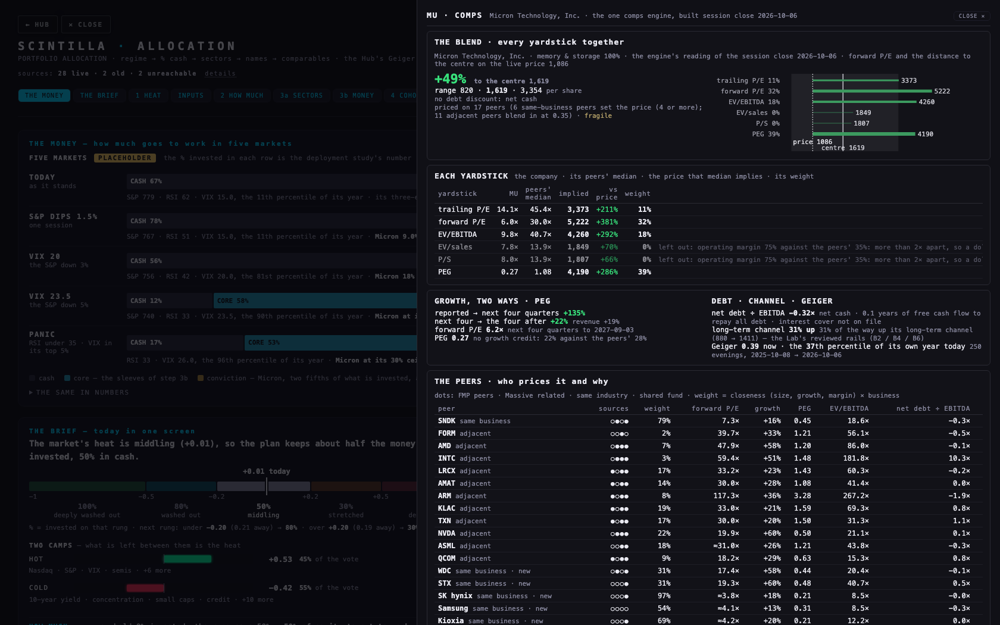
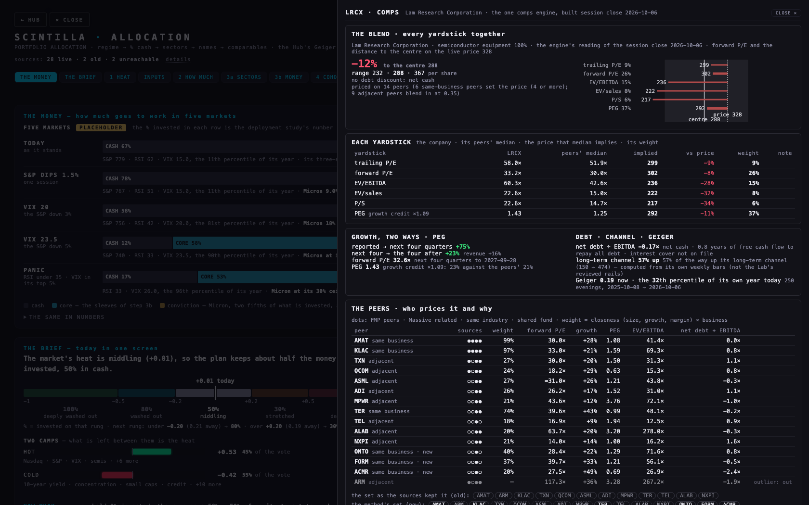
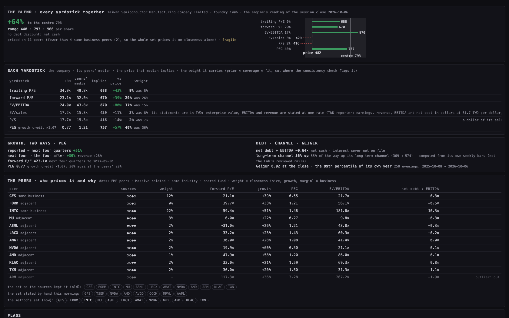
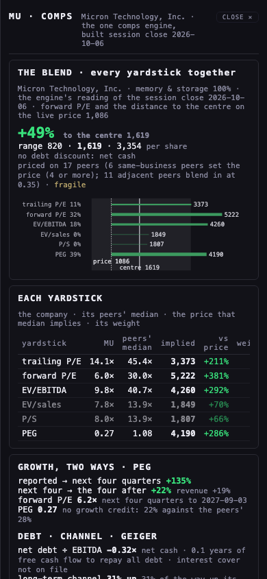
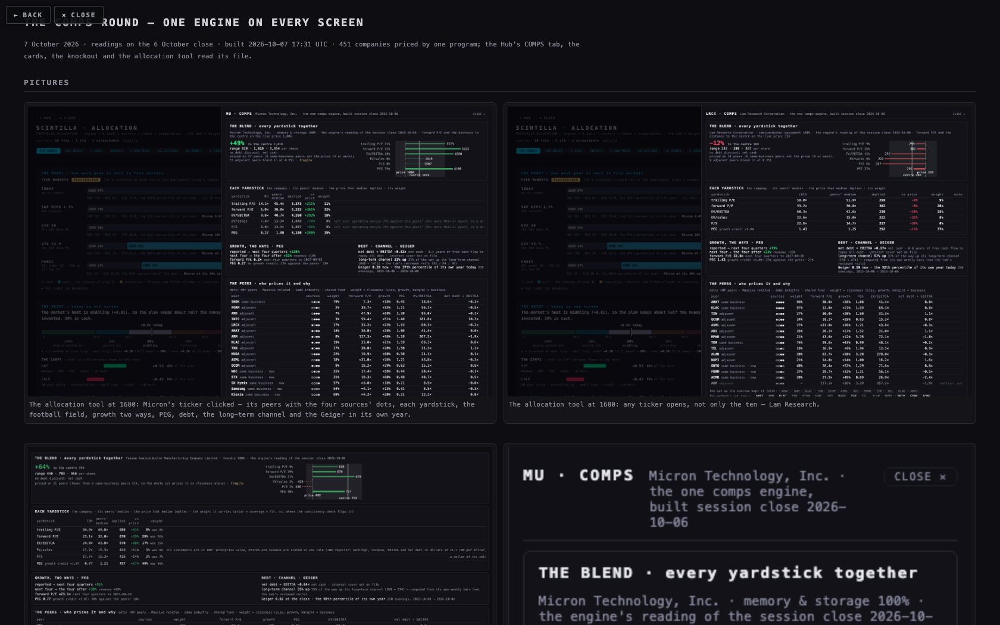
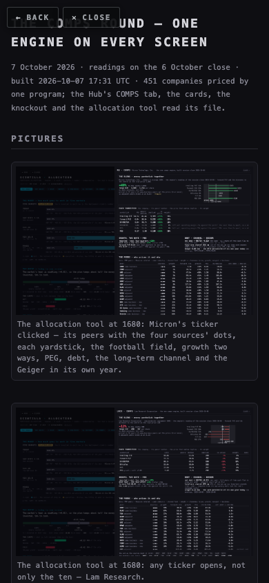

THE COMPS ROUND — ONE ENGINE ON EVERY SCREEN
7 October 2026 · readings on the 6 October close · built 2026-10-07 17:31 UTC · 451 companies priced by one program; the Hub's COMPS tab, the cards, the knockout and the allocation tool read its file.
PICTURES






THE TWELVE NAMES, BEFORE → AFTER
“Before, live” is what Alan read on the live Hub at 12:50 ET today where he read it; for the other names it is the engine's reproduction of the live Hub's own rule (every switch off, the fiscal-year forward basis, the sources' own set), marked *. “This morning” is the one-basis reading with the hand-written peer sets. “Now” is this round: the method's peers, the reassessed football field, the consistency check and the debt discount.
| name | close | before, live Hub | this morning | now · to the centre | forward P/E · growth · PEG | what moved it |
|---|---|---|---|---|---|---|
| GOOGL Alphabet Inc. | 348 | +31% | −5% | −21% centre 274 · 210–432 | 24.2× growth +15% · PEG 1.58 | the method's advertising peers are Meta and a tail of far smaller names; Meta alone carries the reading (fragile), the trailing year carries one-off gains and is cut, and the growth yardstick prices it below the others — so the blend sits under the price. |
| AMZN Amazon.com, Inc. | 256 | +63% | +25% | +18% centre 303 · 217–467 · before debt +25% | 25.7× growth +31% · PEG 0.83 | the Chinese retailers and the two other clouds price it; the sales multiples are cut (its margin is far from the stores'), the growth yardstick is cut for sitting far above the rest, and the debt discount takes a little off. |
| AVGO Broadcom Inc. | 376 | +5.6% | +94% | +136% centre 886 · 519–1,423 | 21.6× growth +55% · PEG 0.54 | the method keeps Palantir and the equipment makers' neighbours in its set; every yardstick but PEG sits far below the growth yardstick, which is capped and cut yet still carries the centre — read it as the market's price for growth, not a target. |
| NVDA NVIDIA Corporation | 239 | +17% | +136% | +211% centre 745 · 446–955 | 19.9× growth +60% · PEG 0.50 | only three same-business peers, so the whole chip set prices it on closeness; the growth yardstick and EV/EBITDA at the small designers' multiples lift it — the same warning as this morning: their price for growth, not a target. |
| TSM Taiwan Semiconductor Manufacturing Company Limited | 482 | centre 269 (below the price) | +9% | +64% centre 793 · 440–966 | ≈23.1× growth +30% · PEG 0.77 | the two foundries are too few, so the chip set prices it on closeness, all figures in dollars at one rate (31.7) per ADR; the sales multiples are cut for its 56% margin — the EV rows no longer sit far from the rest. |
| VST Vistra Corp. | 161 | +14%* | +13% | +1% centre 161 · 128–193 · before debt +9% | 15.6× growth +20% · PEG 0.78 | priced on the four independent power producers with the regulated utilities blending in at 0.35; the debt discount (3.0× EBITDA, heavy) takes the upside to about nothing. |
| MU Micron Technology, Inc. | 1,046 | +274% (4,022) | +13% | +55% centre 1,619 · 820–3,354 | 6.0× growth +22% · PEG 0.27 | the memory line prices it — SanDisk, Western Digital, Seagate, SK hynix, Samsung, Kioxia — with the chip names blending in; the growth yardstick (its PEG) carries the centre up from this morning's +13%. |
| ORCL Oracle Corporation | 145 | +91%* | +68% | +41% centre 204 · 130–405 · before debt +53% | 17.0× growth +41% · PEG 0.42 | Microsoft and Amazon are its only same-business peers and the software names are capped at half their weight; the growth yardstick is cut; the debt discount of 8% (3.2× EBITDA, free cash flow cannot repay) is explicit. |
| DLR Digital Realty Trust, Inc. | 185 | −25%* | +13% | −3% centre 179 · 120–198 · before debt +9% | 75.7× growth +26% · PEG 2.94 | a property trust: P/FFO carries most of the weight; the earnings yardsticks are cut; the debt discount (4.8×, very heavy) takes the centre under the price. |
| EQIX Equinix, Inc. | 1,047 | −35%* | −19% | −29% centre 745 · 658–830 · before debt −20% | 58.0× growth +14% · PEG 4.12 | the same: P/FFO and EV/EBITDA lead, the debt discount (5.0×) is 6% plus the free-cash-flow years; the reading stays below the price. |
| SNDK Sandisk Corporation | 1,660 | +160%* | −40% | −18% centre 1,367 · 900–3,676 | 7.3× growth +16% · PEG 0.45 | the memory line prices it; its forward P/E sits far above where the foreign makers' multiples put it and is cut; the reading stays below the price, less so than this morning. |
| WDC Western Digital Corporation | 411 | +30%* | −31% | +11% centre 455 · 246–1,006 | 17.4× growth +58% · PEG 0.44 | the memory line prices it with the hardware names blending in; the growth yardstick (57% growth into the following year, capped at 40 for the line) carries it back above the price. |
EACH YARDSTICK'S WEIGHT, AND THE CONSISTENCY FLAGS
The weight is a prior (PEG 2.0, forward P/E 1.5, EV/EBITDA 1.0, trailing P/E 0.6, EV/sales 0.5, P/S 0.4; for a property trust P/FFO 2.0 leads) × the share of peers carrying the multiple × how well that multiple prices the peers themselves — then cut where the yardstick's implied price sits more than 1.5× away from the other yardsticks' middle (⚑): to half at 1.5×, a tenth at 3×. Growth and PEG weigh most, as Alan asked; the PEG line counts growth up to 40% a year, faster growth is credited through the weight. “off” = the sales multiples left out because the margin is more than twice the peers'.
| name | trailing P/E | forward P/E | EV/EBITDA | EV/sales | P/S | PEG | P/FFO | consistency flags |
|---|---|---|---|---|---|---|---|---|
| GOOGL | 2% ⚑ | 33% | 24% | 0% ·off | 0% ·off | 42% | — | trailing P/E implies 580 against the other yardsticks' 244 — the reported year is not the next four quarters: one-off items or a step in earnings sit in the trailing figure; its weight is cut to 18% |
| AMZN | 19% | 17% ⚑ | 29% | 2% ⚑ | 2% ⚑ | 32% ⚑ credit ×2.04 | — | forward P/E implies 247 against the other yardsticks' 411 — its forward earnings sit far from where its peers' multiples put them; its weight is cut to 36% · EV/sales implies 160 against the other yardsticks' 364 — a dollar of its sales is not a dollar of its peers': operating margin 12.1% against 11.9%; its weight is cut to 19% · P/S implies 173 against the other yardsticks' 360 — a dollar of its sales is not a dollar of its peers': operating margin 12.1% against 11.9%; its weight is cut to 23% · PEG (the growth credit) implies 506 against the other yardsticks' 262 — its growth into the following year (30.9%) is far from its peers' (15.2%), so the growth yardstick prices it elsewhere; its weight is cut to 27% |
| AVGO | 7% ⚑ | 22% ⚑ | 22% ⚑ | 3% ⚑ | 2% ⚑ | 43% ⚑ credit ×2.26 | — | trailing P/E implies 450 against the other yardsticks' 984 — the reported year is not the next four quarters: one-off items or a step in earnings sit in the trailing figure; its weight is cut to 21% · forward P/E implies 530 against the other yardsticks' 1094 — its forward earnings sit far from where its peers' multiples put them; its weight is cut to 24% · EV/EBITDA implies 628 against the other yardsticks' 1016 — its EBITDA margin sits far from its peers', so EBITDA and earnings price it differently; its weight is cut to 38% · EV/sales implies 277 against the other yardsticks' 982 — a dollar of its sales is not a dollar of its peers': operating margin 48.3% against 35.4%; its weight is cut to 8% · P/S implies 283 against the other yardsticks' 968 — a dollar of its sales is not a dollar of its peers': operating margin 48.3% against 35.4%; its weight is cut to 9% · PEG (the growth credit) implies 1397 against the other yardsticks' 507 — its growth into the following year (55.1%) is far from its peers' (24.4%), so the growth yardstick prices it elsewhere; its weight is cut to 13% |
| NVDA | 9% ⚑ | 17% ⚑ | 35% | 3% ⚑ | 2% ⚑ | 34% ⚑ credit ×2.14 | — | trailing P/E implies 426 against the other yardsticks' 669 — the reported year is not the next four quarters: one-off items or a step in earnings sit in the trailing figure; its weight is cut to 41% · forward P/E implies 396 against the other yardsticks' 750 — its forward earnings sit far from where its peers' multiples put them; its weight is cut to 28% · EV/sales implies 252 against the other yardsticks' 667 — a dollar of its sales is not a dollar of its peers': operating margin 65.2% against 35.3%; its weight is cut to 14% · P/S implies 254 against the other yardsticks' 657 — a dollar of its sales is not a dollar of its peers': operating margin 65.2% against 35.3%; its weight is cut to 15% · PEG (the growth credit) implies 939 against the other yardsticks' 404 — its growth into the following year (59.6%) is far from its peers' (27.8%), so the growth yardstick prices it elsewhere; its weight is cut to 19% |
| TSM | 9% | 29% | 17% | 3% ⚑ | 2% ⚑ | 40% credit ×1.07 | — | EV/sales implies 429 against the other yardsticks' 717 — its statements are in TWD: enterprise value, EBITDA and revenue are stated at one rate (TWD reporter: earnings, revenue, EBITDA and net debt in dollars at 31.7 TWD per dollar, per US-listed share) — a rate or share-count slip shows here first; its weight is cut to 36% · P/S implies 416 against the other yardsticks' 715 — a dollar of its sales is not a dollar of its peers': operating margin 56% against 35.3%; its weight is cut to 34% |
| VST | 5% ⚑ | 44% | 23% | 0% ·off | 0% ·off | 29% ⚑ credit ×1.78 | — | trailing P/E implies 126 against the other yardsticks' 226 — the reported year is not the next four quarters: one-off items or a step in earnings sit in the trailing figure; its weight is cut to 31% · PEG (the growth credit) implies 267 against the other yardsticks' 170 — its growth into the following year (19.9%) is far from its peers' (11.2%), so the growth yardstick prices it elsewhere; its weight is cut to 40% |
| MU | 11% | 32% | 18% | 0% ·off | 0% ·off | 39% | — | — |
| ORCL | 8% ⚑ | 16% ⚑ | 44% | 0% ·off | 0% ·off | 32% ⚑ credit ×1.85 | — | trailing P/E implies 339 against the other yardsticks' 593 — the reported year is not the next four quarters: one-off items or a step in earnings sit in the trailing figure; its weight is cut to 33% · forward P/E implies 309 against the other yardsticks' 686 — its forward earnings sit far from where its peers' multiples put them; its weight is cut to 20% · PEG (the growth credit) implies 805 against the other yardsticks' 329 — its growth into the following year (41.4%) is far from its peers' (22.4%), so the growth yardstick prices it elsewhere; its weight is cut to 17% |
| DLR | 2% ⚑ | 4% ⚑ | 14% ⚑ | 0% ·off | 0% ·off | 13% ⚑ credit ×3 | 68% | trailing P/E implies 61 against the other yardsticks' 116 — the reported year is not the next four quarters: one-off items or a step in earnings sit in the trailing figure; its weight is cut to 27% · forward P/E implies 72 against the other yardsticks' 117 — its forward earnings sit far from where its peers' multiples put them; its weight is cut to 38% · EV/EBITDA implies 76 against the other yardsticks' 129 — the stored EBITDA carries one-off gains or heavy depreciation (EBITDA far above operating income); its weight is cut to 34% · PEG (the growth credit) implies 159 against the other yardsticks' 98 — its growth into the following year (25.8%) is far from its peers' (8%), so the growth yardstick prices it elsewhere; its weight is cut to 38% |
| EQIX | 4% | 6% | 26% | 5% ⚑ | 8% | 9% credit ×1.21 | 43% | EV/sales implies 954 against the other yardsticks' 634 — net debt at 4.98× EBITDA moves the enterprise value a long way from the market value; its weight is cut to 44% |
| SNDK | 14% | 9% ⚑ | 23% | 4% ⚑ | 3% ⚑ | 48% | — | forward P/E implies 6799 against the other yardsticks' 3543 — its forward earnings sit far from where its peers' multiples put them; its weight is cut to 27% · EV/sales implies 2006 against the other yardsticks' 3654 — a dollar of its sales is not a dollar of its peers': operating margin 61.2% against 34.9%; its weight is cut to 30% · P/S implies 1908 against the other yardsticks' 3652 — a dollar of its sales is not a dollar of its peers': operating margin 61.2% against 34.9%; its weight is cut to 27% |
| WDC | 22% | 20% ⚑ | 7% ⚑ | 1% ⚑ | 1% ⚑ | 49% ⚑ credit ×2.87 | — | forward P/E implies 542 against the other yardsticks' 958 — its forward earnings sit far from where its peers' multiples put them; its weight is cut to 32% · EV/EBITDA implies 422 against the other yardsticks' 940 — its EBITDA margin sits far from its peers', so EBITDA and earnings price it differently; its weight is cut to 20% · EV/sales implies 242 against the other yardsticks' 929 — a dollar of its sales is not a dollar of its peers': operating margin 34.9% against 25.7%; its weight is cut to 7% · P/S implies 238 against the other yardsticks' 926 — a dollar of its sales is not a dollar of its peers': operating margin 34.9% against 25.7%; its weight is cut to 7% · PEG (the growth credit) implies 1023 against the other yardsticks' 480 — its growth into the following year (57.5%) is far from its peers' (20%), so the growth yardstick prices it elsewhere; its weight is cut to 22% |
PEER SETS, OLD → NEW
The four sources still vote and every peer shows its dots. The business line from the filings decides who shares the business; four or more same-business peers set the price and the adjacent peers blend in at 0.35 (together never more than half the same-business weight); every peer weighs by its closeness in size, growth and margin. The eight sets stated by hand this morning are shown, and no longer price anything.
| name · its lines | the set as the sources kept it | stated by hand this morning | the method's set now (solid border = same business) | automatic checks |
|---|---|---|---|---|
| GOOGL advertising 73% · cloud 15% · internet platforms 12% | METABIDURDDTOMCSNAPLYVWBDDISSPOTNFLXUBERPINS | METAMSFTAMZNPINSRDDTSNAPAPP | METABIDURDDTOMCSNAPLYVWBDDISSPOTNFLXUBERPINS 7 same-business peers set the price (4 or more); 5 adjacent peers blend in at 0.35 | set check: the peers that price it are far from its size — the middle one is 1/142 of its size |
| AMZN e-commerce 69% · cloud 18% · advertising 10% · physical stores 3% | BABASHOPGOOGLMSFTPDDMELIJDWMTCOSTHDTJXLOW | WMTCOSTTGTMELISHOPBABAJDPDDMSFTGOOGLORCL | BABASHOPGOOGLMSFTPDDMELIJDWMTCOSTHDTJXLOW 7 same-business peers set the price (4 or more); 5 adjacent peers blend in at 0.35 | set check: the peers that price it are far from its size — the middle one is 1/13 of its size |
| AVGO semiconductors 58% · infrastructure software 42% | ASMLAMDONTOPLTRADILRCXAMATARMKLACTXNQCOMINTC | NVDAAMDMRVLQCOMARM | ASMLAMDONTOPLTRADILRCXAMATARMKLACTXNQCOMINTC 8 same-business peers set the price (4 or more); 4 adjacent peers blend in at 0.35 · outliers out: ARM, QCOM | — |
| NVDA data-center chips 90% · semiconductors 10% | MRVLAMDINTCTSMASMLADILRCXAMATARMKLACTXNTER | AVGOAMDMRVLQCOMARM | MRVLAMDINTCTSMASMLADILRCXAMATARMKLACTXNTER fewer than 4 same-business peers (3), so the whole set prices it on closeness alone · outliers out: ARM | set check: only 3 of its 12 peers share its business |
| TSM foundry 100% | GFSFORMINTCMUASMLLRCXAMATNVDAAMDARMKLACTXN | GFSTSEMNVDAAMDAVGOQCOMMRVLAAPL | GFSFORMINTCMUASMLLRCXAMATNVDAAMDARMKLACTXN fewer than 4 same-business peers (2), so the whole set prices it on closeness alone · outliers out: ARM | set check: only 2 of its 12 peers share its business |
| VST power producers 100% | CEGNRGTLNOKLOETRSREXELDEXCAEPPEGDUK | CEGTLNNRG | CEGNRGTLNOKLOETRSREXELDEXCAEPPEGDUK 4 same-business peers set the price (4 or more); 8 adjacent peers blend in at 0.35 | set check: only 4 of its 12 peers share its business |
| MU memory & storage 100% | SNDKFORMAMDINTCLRCXAMATARMKLACTXNNVDAASMLQCOM | SNDKWDCSTXSK hynixSamsungKioxia | SNDKFORMAMDINTCLRCXAMATARMKLACTXNNVDAASMLQCOMWDCSTXSK hynixSamsungKioxia 6 same-business peers set the price (4 or more); 11 adjacent peers blend in at 0.35 | set check: only 6 of its 17 peers share its business |
| ORCL cloud 86% · infrastructure software 14% | MSFTAMZNPLTRFTNTPANWSNPSCRWDIBMNETTWLOXYZCRM | MSFTGOOGLAMZNIBMCRMNOWSNOWMDB | MSFTAMZNPLTRFTNTPANWSNPSCRWDIBMNETTWLOXYZCRM fewer than 4 same-business peers (2), so the whole set prices it on closeness alone | set check: only 2 of its 12 peers share its business |
| DLR data-centre reit 100% | AMTEQIXCCISBACIRMSPGPSAOCBREPLDEXRWELL | none stated | AMTEQIXCCISBACIRMSPGPSAOCBREPLDEXRWELL fewer than 4 same-business peers (2), so the whole set prices it on closeness alone | set check: only 2 of its 12 peers share its business |
| EQIX data-centre reit 100% | AMTDLRIRMCCISBACPLDSPGWELLPSAOVTRCBRE | none stated | AMTDLRIRMCCISBACPLDSPGWELLPSAOVTRCBRE fewer than 4 same-business peers (2), so the whole set prices it on closeness alone | set check: only 2 of its 12 peers share its business |
| SNDK memory & storage 100% | MUFORMMRVLTXNKLACTERADIARMQCOMAMATLRCXCRDO | none stated | MUFORMMRVLTXNKLACTERADIARMQCOMAMATLRCXCRDOSTXWDCSK hynixSamsungKioxia 6 same-business peers set the price (4 or more); 11 adjacent peers blend in at 0.35 | set check: only 6 of its 17 peers share its business |
| WDC memory & storage 100% | STXGLWAPHANETSMCILITECOHRDELLNOKCSCOPNTAP | none stated | STXGLWAPHANETSMCILITECOHRDELLNOKCSCOPNTAPSNDKMUSK hynixSamsungKioxia 6 same-business peers set the price (4 or more); 11 adjacent peers blend in at 0.35 | set check: only 6 of its 17 peers share its business |
THE DEFAULTS WE ROLL WITH
Micron: the blend of the memory line with its PEG credit — reads +55% to a centre of 1,619 on the memory makers (SanDisk, Western Digital, Seagate, SK hynix, Samsung, Kioxia) with the chip names blending in. Vistra: priced against the independent power producers (Constellation, NRG, Talen, Oklo); the regulated utilities blend in at 0.35; +1% after a 3% debt discount. Oracle: an explicit debt discount — debt discount 8% off the centre: 3% for net debt at 3.17× EBITDA (heavy); 5% because today's free cash flow cannot repay the debt · interest cover not on file; +41% to 204 against +53% before it. Interest cover joins the day the interest column is filled: the statements job now writes it; the additive column and its rollback are written and not applied.
WHAT WAS NOT DONE, AND WHAT TO KNOW
· The chip leaders (Nvidia, Broadcom, TSMC) still read far above the price: their same-business peers are too few or priced on another growth story, so the growth yardstick carries them even capped and cut. These are the market's price for growth, not targets; the flags say so on each. · The live Hub's own numbers at 12:50 ET are Alan's reading of six names; the other six “before” figures are the engine's reproduction of that rule, not a screenshot of the live page. · The long-term channel is the Lab's reviewed rails for one name; for every other name it is a channel computed from the name's own weekly bars, and says so. · The knockout's tools read the engine's feed file (knockout-comps.json); the knockout itself was not re-run in this round. · The Hub's own CARDS tab (another branch) is not yet pointed at the engine's cards file. · Qualcomm and Arm are cut from the designers' sets as price outliers by the older rule; Qualcomm is the kind of peer Alan named for Nvidia and Broadcom, and that rule deserves a look.
PAGE SPECS
One program — the comps engine — reads the Hub's tables once (the knockout's snapshot of 7 Oct, estimates re-read with both periods), prices every company on the 6 Oct close and writes one file per name and one index. Forward P/E is the dashboard's: price ÷ the next four quarters of expected earnings; a foreign reporter's earnings, revenue, EBITDA and net debt are in dollars at the supplier's own paired rate (TSMC: 31.7 Taiwan dollars per dollar) and per ADR (1 ADR = 5 shares). Growth is the four quarters after the next four over the next four; PEG is that forward P/E over that growth, and is called PEG everywhere. Property trusts carry P/FFO. Where the knockout's own rule found one-off gains in the reported year (Alphabet, Amazon) the EV/EBITDA row is read on EBITDA without them. The blend is the weighted median of every peer's implied price on every yardstick; low and high are the weighted 25th and 75th. The debt discount is the knockout's steps (3% / 6% / 10% off the centre above 2.5 / 4 / 6× EBITDA) plus 1% per year of free cash flow beyond five that repaying all debt would take (5% when free cash flow cannot repay it). Thin = fewer than four peers behind the centre; fragile = one peer's removal moves the centre more than 10%. The Geiger's own year is filed as percentiles so a screen places today's value in today's year. Nothing was written to any table; the table design is a dry run.